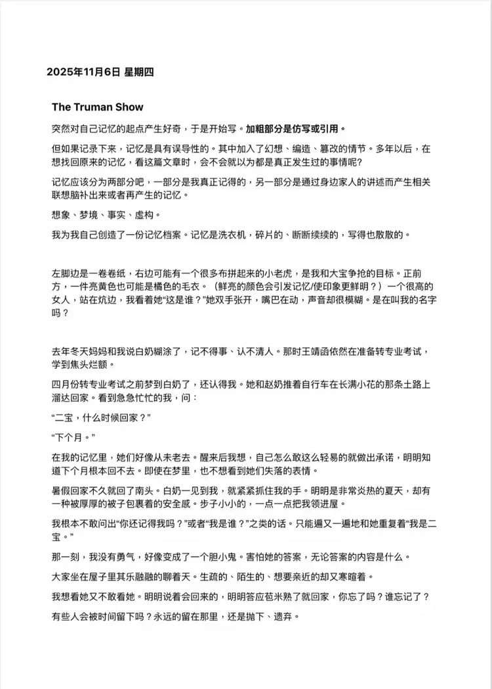
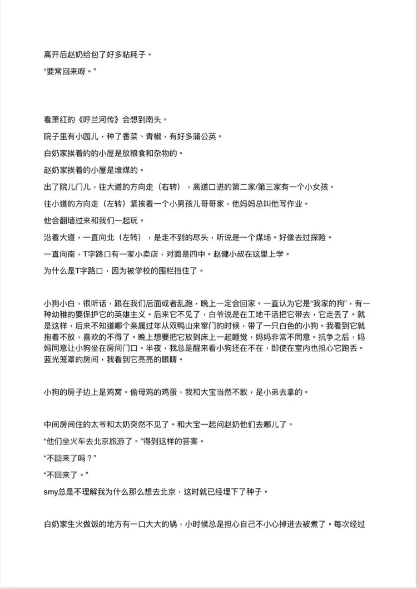
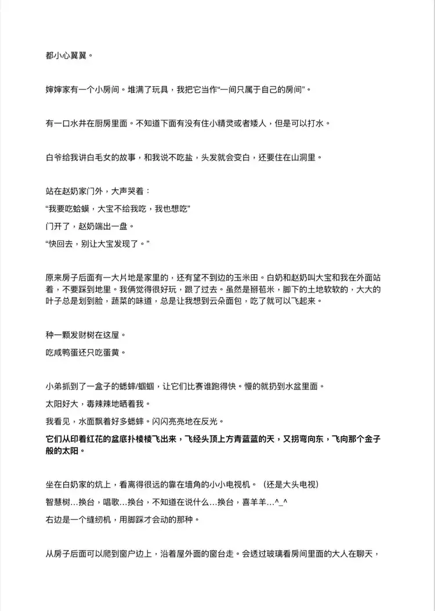
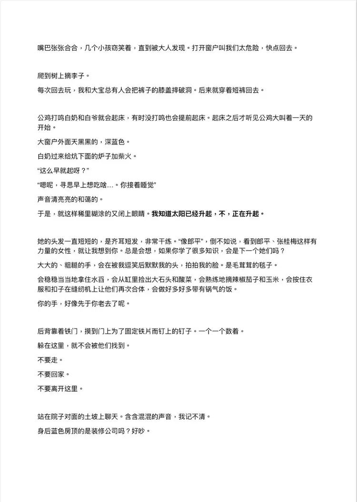
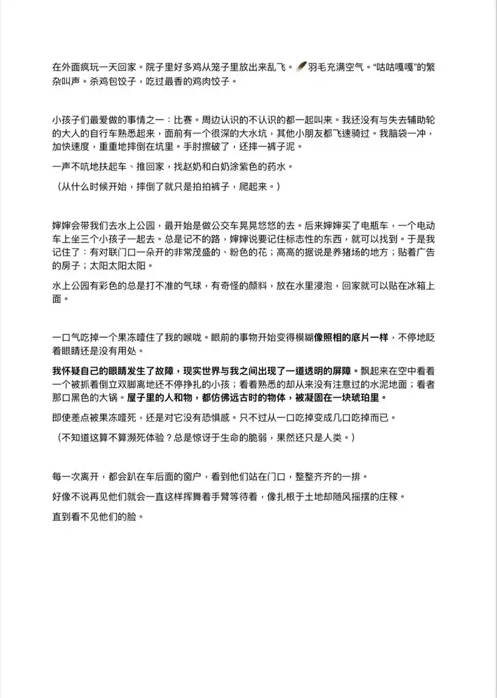

保留原话与语气，修正错字与分段。英文为网站译文。文中的判断与疑问保留写作当时的状态。Original voice retained, with light typo and paragraph corrections. The English is a website translation; judgements and questions reflect the time of writing.
突然对自己记忆的起点产生好奇，于是开始写。Suddenly curious about where my memories began, I started writing.
但如果记录下来，记忆是具有误导性的。其中加入了幻想、编造、篡改的情节。多年以后，在想找回原来的记忆，看这篇文章时，会不会就以为都是真实发生过的事情呢？But when written down, memory can mislead. It includes imagined, invented and altered events. Years later, looking back at this essay to recover my original memories, will I think it all really happened?
记忆应该分为两部分吧，一部分是我真正记得的，另一部分是通过身边家人的讲述而产生相关联想脑补出来或者再产生的记忆。
想象、梦境、事实、虚构。Perhaps memory should be divided into two parts: what I genuinely remember, and what I have imagined or reconstructed through my family’s stories.
Imagination, dreams, facts, fiction.
四月份转专业考试之前梦到白奶了，还认得我。她和赵奶推着自行车在长满小花的路上溜达回家。看到急急忙忙的我，问：
“二宝，什么时候回家？”
“下个月。”Before my exam to change majors in April, I dreamed of Grandma Bai. She still recognised me. She and Grandma Zhao were wheeling their bicycles home along a path full of little flowers. Seeing me in a hurry, she asked:
“Erbao, when are you coming home?”
“Next month.”
在我的记忆里，她们好像从未老去。醒来后我想，自己怎么敢这么轻易的就做出承诺，明明知道下个月根本回不去。即使在梦里，也不想看到她们失落的表情。In my memories they seem never to have grown old. When I woke, I wondered how I could have made that promise so easily, knowing I could not go home the following month. Even in a dream, I didn’t want to see their disappointment.
暑假回家不久回了南头。白奶一见到我，就紧紧抓住我的手。明明是非常炎热的夏天，却有一种被厚厚的被子包裹着的安全感。步子小小的，一点一点把我领进屋。Soon after returning home for the summer, I went back to Nantou. The moment Grandma Bai saw me, she held my hand tightly. It was a scorching summer day, yet I felt as safe as if I were wrapped in a thick quilt. With small steps, she led me into the house.
我根本不敢问出“你还记得我吗？”或者“我是谁？”之类的话。只能一遍又一遍地和她重复着“我是二宝。”
那一刻，我没有勇气，好像变成了一个胆小鬼。害怕她的答案，无论答案的内容是什么。I couldn’t bring myself to ask “Do you remember me?” or “Who am I?” All I could do was repeat, again and again, “I’m Erbao.”
At that moment I had no courage. I felt like a coward, afraid of her answer, whatever it might be.
白奶过来给炕下面的炉子加柴火。
“这么早就起呀？”
“嗯呢，寻思早上想吃啥……你接着睡觉”
声音清亮亮的和蔼的。Grandma Bai came to add wood to the stove beneath the heated bed.
“You’re up so early?”
“Yes, thinking about what to eat this morning… You go back to sleep.”
Her voice was bright and kind.
大大的、粗糙的手，会在被我逗笑后摸摸我的头，拍拍我的脸。是毛茸茸的毯子。
会稳稳当当地拿住水舀，会从缸里捡出大石头和酸菜，会熟练地摘辣椒茄子和玉米，会使衣服和扣子在缝纫机上让他们再次合体，会做好多好多带有锅气的饭。
你的手，好像先于你老去了呢。Those large, rough hands would stroke my head and pat my face when I made her laugh. They were a fluffy blanket.
They held a water ladle steadily, lifted stones and pickled cabbage from the crock, picked peppers, aubergines and corn with practised ease, reunited clothes and buttons at the sewing machine, and made so many meals full of the warmth of cooking.
Your hands seem to have grown old before you did.
每一次离开，都会趴在车后面的窗户，看到他们站在门口，整整齐齐的一排。
好像不说再见他们就会一直这样挥舞着手臂等待着，像扎根于土地却随风摇摆的庄稼。
直到看不见他们的脸。Every time we left, I would lean against the rear window and see them standing at the doorway in a neat row.
As if, without a goodbye, they would keep waving and waiting like crops rooted in the soil, swaying in the wind.
Until I could no longer see their faces.
查看完整中文原稿View the complete Chinese manuscript ↗




